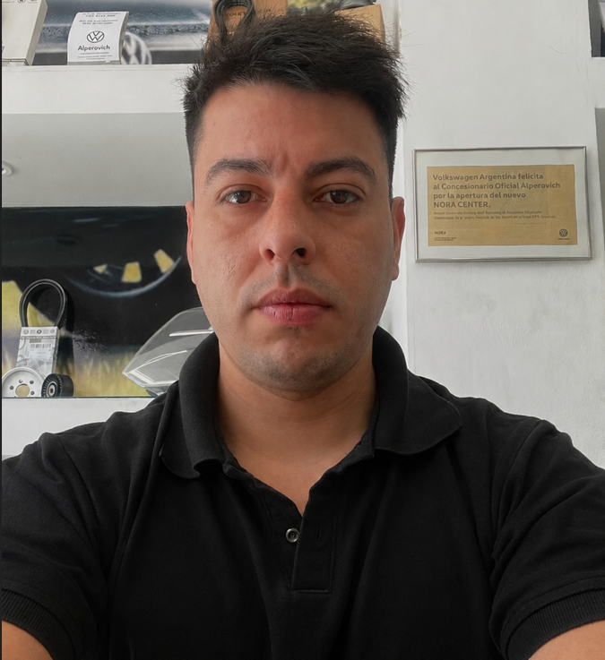

Mauro Maidana
Estudiante de Programacion y Desarrollador Web Junior
Soy un desarrollador web apasionado por crear experiencias digitales únicas y funcionales. Siempre buscando aprender nuevas tecnologias y mejorando habilidades.
Contactarme Descargar CV
Experiencia Laboral
2014 - Actualidad
Asesor de Repuestos y Servicios
Leon Alperovich de Tucuman SA
Responsable de brindar asesoramiento técnico y comercial a los clientes, gestionando pedidos de repuestos y servicios, asegurando la satisfacción del cliente y el cumplimiento de los objetivos de ventas.
- Atención al cliente
- Gestión de pedidos
- Conocimiento técnico de repuestos y servicios
- Habilidades de comunicación y negociación
- Trabajo en equipo y colaboración con otros departamentos
Capacitacion Profesional
Certificacion Vendedor de Repuestos
Certificación obtenida en el año 2024, aprobando mas de 14 cursos en modalidad presencial y virtual en la plataforma Konviva de Volkswagen Argentina. Validando mis conocimientos y habilidades en la venta de repuestos automotrices, incluyendo la identificación de piezas, asesoramiento técnico y atención al cliente.
Atención al cliente
Conocimiento técnico de repuestos Originales VW
Habilidades de comunicación
Conocimientos de logistica